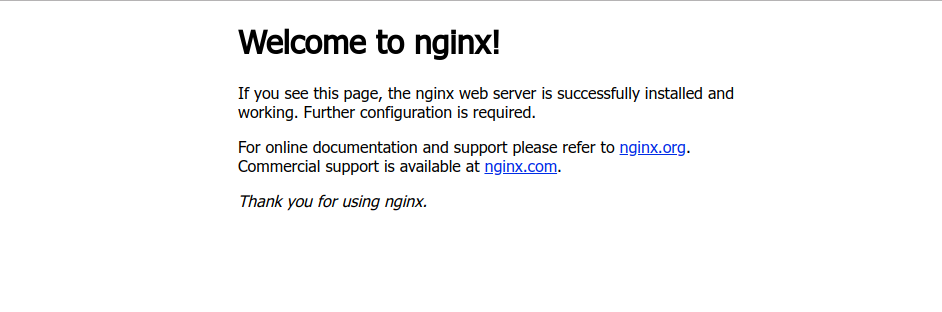

2018-05-06
1、使用 apt 安装
apt install nginx
2、检查 Nginx 的运行状态
root@Debian:~# systemctl status nginx
● nginx.service - A high performance web server and a reverse proxy server
Loaded: loaded (/lib/systemd/system/nginx.service; enabled; vendor preset: enabled
Active: active (running) since Sat 2018-05-06 10:45:52 EDT; 27min ago
Docs: man:nginx(8)
Process: 4698 ExecReload=/usr/sbin/nginx -g daemon on; master_process on; -s reload
Process: 4628 ExecStart=/usr/sbin/nginx -g daemon on; master_process on; (code=exit
Process: 4627 ExecStartPre=/usr/sbin/nginx -t -q -g daemon on; master_process on; (
Main PID: 4632 (nginx)
Tasks: 2 (limit: 4915)
CGroup: /system.slice/nginx.service
├─4632 nginx: master process /usr/sbin/nginx -g daemon on; master_process
└─4699 nginx: worker process
May 12 10:45:52 DLS systemd[1]: Starting A high performance web server and a reverse
May 12 10:45:52 DLS systemd[1]: nginx.service: Failed to read PID from file /run/ngin
May 12 10:45:52 DLS systemd[1]: Started A high performance web server and a reverse p
May 12 10:56:16 DLS systemd[1]: Reloading A high performance web server and a reverse
May 12 10:56:16 DLS systemd[1]: Reloaded A high performance web server and a reverse
lines 1-18/18 (END)
3、使用 IP 或域名访问检验，可以看到如下页面 
1. /etc/nginx/sites-available 目录下是当前 server 的配置文件（一般在这里新增和修改配置文件，再生成一个软链接放到到 sites-enabled 目录下）
2. /etc/nginx/sites-enabled 目录下是激活并使用的 server 配置文件，是 sites-available 目录下的配置文件的软链接文件。如果不想启用某个服务，可以在这里将相关文件删掉。
/var/www/html 存放着 Nginx 的默认主页（欢迎页）
运行自己的静态博客
1、 创建自己的目录文件，然后将我们博客的静态网页放在此目录下
mkdir /var/www/myBlog
2、配置 server 文件
cd /etc/nginx/sites-available
touch myBlog.conf
nano myBlog.conf
myBlog.conf 文件内容如下：
server {
listen 80 default_server;
listen [::]:80 default_server;
server_name _;
root /var/www/myBlog;
index index.html;
}
3、检查配置文件是否正确
nginx -t
4、创建软链接
ln -s /etc/nginx/sites-available/myBlog.conf /etc/nginx/sites-enabled/myBlog.conf
cd /etc/nginx/sites-enabled
rm default
5、重新加载
systemctl reload nginx
6、使用 IP 或域名就可以访问博客首页了。
Comments